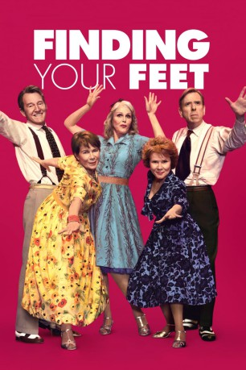

#9693 Tanz ins Leben
Alternativ: Finding Your Feet
 
 IMDB-Wertung: 6.6 / 10
IMDB-Wertung: 6.6 / 10  Metascore: 53
Metascore: 53 
On the eve of retirement a middle class, judgmental snob discovers her husband has been having an affair with her best friend and is forced into exile with her bohemian sister who lives on an impoverished inner-city council estate.
Jahr: 2017
Dauer: 111 Minuten
FSK:
Land: England Studio: Entertainment OneTonspuren: DTS - ,
Untertitel:
Auflösung: 1080p (1920x800) Größe: 5642 MB
Genre: Drama, Musik, Komödie, Liebe
Regisseur: Richard Loncraine
Drehbuch: Meg Leonard, Nick Moorcroft
Soundtrack: Michael J. McEvoy
Darsteller:
 Imelda Staunton als Sandra Abbott
Imelda Staunton als Sandra Abbott Celia Imrie als Bif
Celia Imrie als Bif Timothy Spall als Charlie Glover
Timothy Spall als Charlie Glover Joanna Lumley als Jackie
Joanna Lumley als Jackie David Hayman als Ted
David Hayman als Ted John Sessions als Mike Abbott
John Sessions als Mike Abbott- Josie Lawrence als Pamela Harper
 Phoebe Nicholls als Janet
Phoebe Nicholls als Janet- Sian Thomas als Lilly
- Larrington Walker als Gerald
- Paul Chan als Restaurant Manager
 Victoria Wicks als Pru - Swimmer
Victoria Wicks als Pru - Swimmer Richard Hope als Care Home Manager
Richard Hope als Care Home Manager- Andy Rashleigh als Barman
- Alex Blake als Tow Truck Driver
- Maryam Soumare Dahan als Funeral Guest (uncredited)
 Indra Ové als Corrinna
Indra Ové als Corrinna- Marianne Oldham als Nicola
- Sonny Fowler als Luke
- Frankie Oatway als Cab Driver
- Alfredo Pea als Rome Hotel Doorman
- Cristina Avery als Dancer
- Kaye Brown als Dancer
- Peter Challis als Dancer
- Fred Folkes als Dancer
- Avril Gaynor als Dancer
- Dollie Henry als Dancer
- Heather A. Lewis als Dancer
- Teresa Lucas als Dancer
- Christopher Molloy als Dancer
- Jill Nalder als Dancer
- Kenn Oldfield als Dancer
- Basil Patton als Dancer
- Sarah Tindle als Dancer
- Philip Tsaras als Dancer
- Patricia Winker als Dancer
- Rochelle De-Terville als Mourner (uncredited)
Datei: X:\2017(N-Z)\Tanz ins Leben (2017, FSK, 1920x800).mkv seit 04.10.2018
Festplatte: HD 2017(A-Z)-2018(A-F)
 Es gibt insgesamt 170 Filme in der Gruppe '2017(N-Z)'
Es gibt insgesamt 170 Filme in der Gruppe '2017(N-Z)'